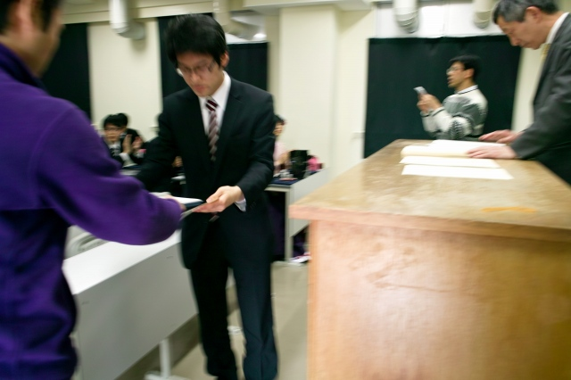
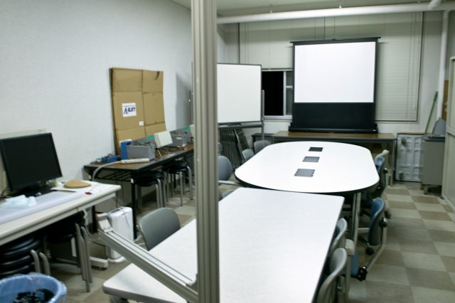

| ・平成23年度学位記授与と追いコン (H24.03.26) | |||
去年は博士1名，修士3名，学部7名でしたが、今年は修士1名，学部4名が卒業しました． |
|||
|
ちょっと寒いです |
新M1部屋で待機 | ||
|
集合写真は13時から |
S浦くんの写真忘れた。。。 | ||
|
I上くん |

T永くん | ||
|
M下くん |
I垣くん | ||
|
鏡割りは16時から |
ちょっと遅れて開始 | ||
|
会場半分だけは狭いよ |
乾杯前にたべるな！ | ||
|
今日は食べるんです |
樽には京の春！ | ||
|
お説教の後は、高倉先生の乾杯 |
村田先生＠松機会勧誘中 | ||
|
Fの部屋で追いコン、H野くんの治具じゃま |
コルクはまかせろ！ | ||
|
ハイッ！ |
I上くん、飲もうか！ | ||
|
とくちゃん乾杯よろしく |
ピザうめぇ− | ||
|
I上くん、飲もうか？ |
村田先生への贈り物 | ||
|
H野くんの治具がじゃま！ |
しばしご歓談 | ||
|
おれは完全に遣り切りましたよ（引継は残ってるけど）！ |
助教の人へ忘れてたわけじゃなくて | ||
|
世界で初めて回転像静止法でスペックルとったったた as far as I know |
えー今年は落着きます | ||
|
とれあえずガマンしたらええ |
フラグを立ててます | ||
|
実は締切りがあってね |
しんどくなったら戻ってきても良いよ | ||
|
体調管理に気をつけて下さい |

H野くんの治具じゃま！ | ||